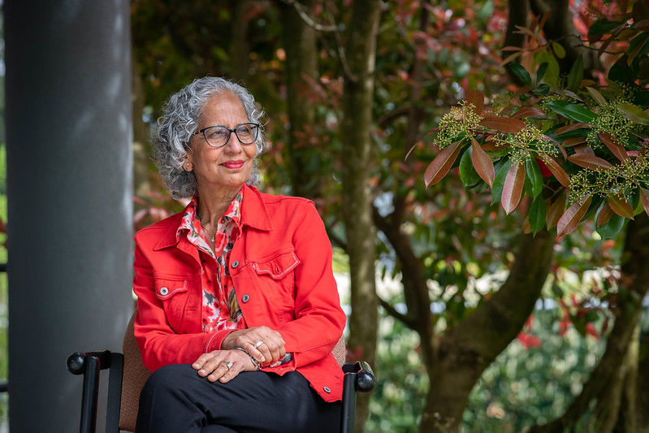
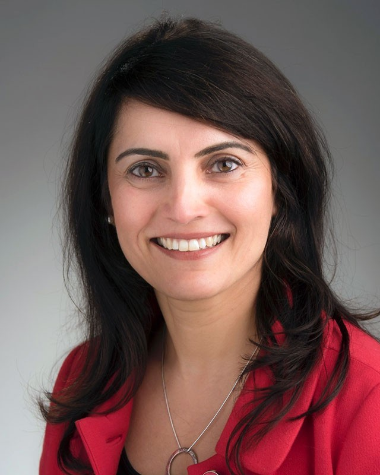
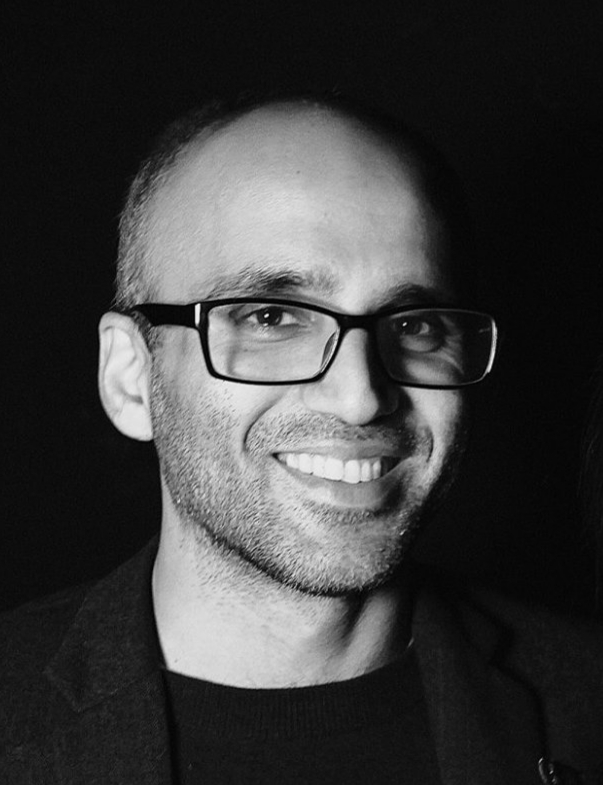
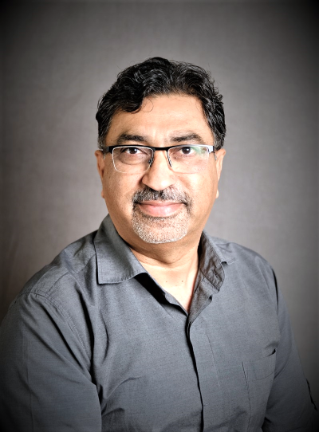

About SASI
The South Asian Studies Institute at the University of the Fraser
Valley brings together South Asia scholars and students from diverse
backgrounds and disciplines to create a nexus point for programs and
activities that support our vision. The Institute fosters
inter-disciplinary scholarly research, community and public engagement
on issues related to South Asia and the Canadian South Asian Diaspora.
The Institute initiates, directs and implements the development,
maintenance and enhancement of scholarship, research and engagement in
collaboration with faculty, students and community. The Institute
takes direction from UFV's strategic goals to be a leader of social,
cultural, economic and environmentally responsible development in the
Fraser Valley.
The Institute is a repository of the pioneering history
of immigrant settlers who make up the Canadian South Asian Diaspora. We
also undertake much needed contemporary research that benefits academia,
members of the community, government, organizations and agencies as well
as global scholars and interested persons.
Consultation
SASI has spent time consulting with organizations, associations and individuals who have lived experiences as South Asian Canadian Muslims in BC and beyond. The goal is to record first-hand or oral histories of past and present.
Building Relationships
We have formed strong partnerships with community and organizations to access personal stories and important archives. These relationships ensure that the research is inclusive and representative of the diverse South Asian Muslim experiences in B.C.
Education & Outreach
Educating the public on the contributions of South Asian Muslims in B.C, through exhibits, workshops, and online resources, outreach has fostered cultural understanding that celebrates untold histories, heritage and culture.
Grants & Funding
Generous grants and funding have made it possible for resources, to conduct in-depth research, create public exhibits, and develop educational programs that preserve and share this heritage.
Project History
The historical and contemporary presence of Muslim communities in Canada, particularly South Asian Muslims in B.C., has often been obscured. Our research project focuses on their contributions and covers three major timelines: early migration to BC, mid-20th-century migration, and recent migration to Canada. Exploring the diverse sects and cultural integration of Islam, including Sunni sub-sects like Wahabi, Salafi, Barelvi, and Deobandi, as well as Shia sub-sects like Twelver Shi'ism and Ismailism, along with Sufism, we aim to promote understanding and welcome feedback for future enhancements.
Our Team
Advisory Committee

Dr. Satwinder BainsPhD, Director,
South Asian Studies Institute
 Awneet Sivia
Awneet Sivia PhD, Associate Vice President Teaching and Learning

Jas UppalPhD, Assistant Professor, Teacher Education Program

Hassan JavidPhD, Associate Professor, School of Society, Culture and Society

Shazad NazirPhD, Assistant Professor, Teacher Education Program
Our Partners


We thank our Financial Supporters